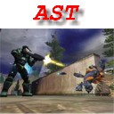
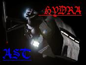

Forums galactiques > Assemblée Galactique : diplomatie officielle > jolino
Pages : 1 2
| Batracien Respect diplomatique : 8  11/11 ETU 17:18  | Score : 0 Détails Le Batracien, qui n'avait pas pris la parole depuis de très nombreux jours en ces lieux s'avança. Il avait la tête des mauvais jours.
<< Mes chers collègues Commandants, j'ai une triste nouvelle à vous annoncer. Tout à l'heure, j'ai reçu un message de l'un de mes ministres à la tête de mes possessions dans un système. Il m'a appris une nouvelle dont je peine a me remettre : moi qui me bat pour vous fournir au plus bas prix, moi qui ne cherche de noises à personne, j'ai été lâchement attaqué par le commandant jolino sur une planète que je possèdais depuis de nombreux jours. Aussi, je demande a ce Commandant de venir me fournir ici des explications quand à son attaque sans aucun préavis. Je ne l'attaquerais pas tant que la voie diplomatique laissera un espoir de voir la situation se règler s&ans bain de sang.>> Sur ces parole, le Batracien se dirigea vers l'une de ses frégates et mis le cap vers la planète concernée afin d'aider les familles des victimes dans leur deuil et afin de rassurer les populations terrorisées par la violence de l'assaut. | ||
| commandant alex Respect diplomatique : 0  11/11 ETU 17:22 | Score : 0 Détails J'éspère que tu arriveras à régler ça sans faire un bain de sang dans l'espace. :)
Cordialement, le commandant Alex. | ||
| Imothep Respect diplomatique : 571  11/11 ETU 17:23 | Score : 0 Détails La Police Galactique, proposée par le PPG, pourrait vous aider à votre tour, en effectuant une médiation courtoise. Expliquez la situation au PPG par MP et si vous êtes véritablement agressé, nous pourrions vous aider. Le fait que vous apparteniez à l'AST ne nous dérange pas.
Bien cordialement. | ||
| Batracien Respect diplomatique : 8 11/11 ETU 17:24 | Score : 0 Détails Je vous remercie mais je n'aurais pas besoin de votre soutien.
| ||
| Djil Respect diplomatique : 211  12/11 ETU 23:13 | Score : 0 Détails je vois que votre parti n'est pas si populaire que cela, commandant greg oups !! pardon je voulai dire imothep...
a moins que ce ne soit vous qui tiriez par le fond votre parti, par votre simple présence en son sein ?? en vous laissant méditer a cela... | ||
| Marchand d'elite Respect diplomatique : 0  12/11 ETU 23:45 | Score : 0 Détails Très spirituel commandant djil comme toujour.
| ||
| Batracien Respect diplomatique : 8 13/11 ETU 04:48 | Score : 0 Détails Etant donné l'absence de réponse de la part de jolino, que ce soit ici ou en mp, étant donné que ce commandant m'a encore volé une planète sans préavis.
Je délare : Que le commandant jolino, ayant refusé la diplomatie et préfèrant visiblement les rapports de force, est voué à la MORT! Que jamais ce conflit n'aurait eu lieu sans le manque de respect de la part de jolino. Après ces déclarations, le commandant Batracien s'en retourna à ses occupations. | ||
| Ta Brioche Respect diplomatique : 27  13/11 ETU 04:56 | Score : 0 Détails Batracien si vous touchez a jolino, que je ne connais ni d eve ni d adam, je vous extermine.
| ||
| Batracien Respect diplomatique : 8 13/11 ETU 07:21 | Score : 0 Détails Et puis-je en connaître la raison?
Ce commandant m'a attaqué et refuse les arrangemants que je lui propose, je suis obligé de répliquer! | ||
| Ta Brioche Respect diplomatique : 27 13/11 ETU 07:53 | Score : 0 Détails Oui il vous a attaque sans raison mais il est plus fort que vous alors vous devez respecter sa preeminence!
Je vais bientot creer la coalition pour l ecrasement des petits commandants par la force donc avis a tous les puissants avides de maintenir leur statut! | ||
| Batracien Respect diplomatique : 8 13/11 ETU 08:03 | Score : 0 Détails Commandant Ta Brioche, votre arrogance n'a d'égal que votre bêtise!
| ||
| ced01 Respect diplomatique : 0  13/11 ETU 11:01 | Score : 0 Détails je tenais à dire que connaissant le commandant jolino je peut vous affirmé qu'il s'agit d'un jeune commandant et qu'il n'a pas encore pris conscience de ces actes et ne connait rien à la politique et encore moin à l'assemblée galactique
je vous pris donc de lui lancé le temps de s'excuser Cordialement Cedric | ||
| Batracien Respect diplomatique : 8 13/11 ETU 11:05 | Score : 0 Détails Celà fait maintenant plus de deux jours que je lui demande des excuses.
Sa seule réponse a été une nouvelle attaque contre mes planètes. J'en déduis que ce commandant veut la guerre. Et je vous garantit qu'il l'aura! | ||
| Hydra Respect diplomatique : -2  13/11 ETU 11:06 | Score : 0 Détails Ta brioche, je t'empecherai de tuer tous les nouveaux car mon ojectif a moi est de les protéger et même si la coalition ne veut pas m'aider je les aidrait, donc à tous les nouveauc qui se font attaquer par Ta Brioche prévenait moi.
Hydra | ||
| js1boys Respect diplomatique : 0  13/11 ETU 11:24 | Score : 0 Détails tu meme avis que hydra on attaque pas seux viennent d'arriver !
| ||
| Hydra Respect diplomatique : -2 13/11 ETU 11:28 | Score : 0 Détails Js faut debord que tu te develloppe au lieu de vouloir tuer tous le monde tu risquerai de te faire tuer par les autres qui voudront se venger.
Hydra | ||
| commandant alex Respect diplomatique : 0 13/11 ETU 11:56 | Score : 0 Détails Oui, mais les commandants ont le droit d'être libres et de faire ce qu'ils veulent du moins qu'ils soient égaux.
| ||
| ced01 Respect diplomatique : 0 13/11 ETU 12:02 | Score : 0 Détails "la liberté personnelle s'arrète la où commence celle des autres"
| ||
| yable Respect diplomatique : 250  13/11 ETU 13:42 | Score : 0 Détails J'invite tous les commandants se faisant injustement attaquer à prendre contact avec moi.
Si vraiment trop de demande m'arrivent, je n'aurais aucun mal à trouver des personnes honnorables pour servir d'intermédiaires diplomatiques, et au besoin de force d'interposition. Notemment dans le cas d'attaques de personnes qui profitent de leur puissance pour s'étendre sur le dos de jeunes commandants. Un message privé est préférable afin d'éviter de trop surcharger cette noble assemblée, et me permet de garder un trace du probleme afin d'y réagir au plus vite. Bonne chance à vous, et ne vous inquietez pas, il est facile de trouver des alliés dans le cas d'attaques injustifiées. Cordialement, yable. | ||
| jolino Respect diplomatique : -16  21/11 ETU 09:32 | Score : 0 Détails comandant batracien:je suis dans l'incapacité de rendre vos planètes pour le moment vu l'attaque subite que j'ai subit sur mes trois planètes par le comandant sephiroth.une fois que le probléme sera réglé je vous renderai vos 2 planète.merci de ta compréhension.
|
Pages : 1 2
Forums galactiques > Assemblée Galactique : diplomatie officielle > jolino